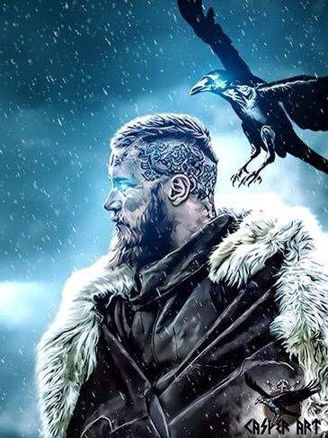

Vikings
A História
Segundo a lenda, Ragnar foi casado três vezes: com a skjaldmö Lagertha, com a bela Tora Borgarhjort, e com Aslauga. Diz-se ter sido parente do rei dinamarquês Godofredo e filho do rei sueco Sigurdo, o Anel. Tornou-se rei e distinguiu-se por muitas invasões e conquistas. Há duas histórias diferentes sobre sua morte.
Lagertha foi, de acordo com as lendas locais, uma skjaldmö ("mulher guerreira que usava escudo") viking que viveu no território da atual Noruega, tendo sido a primeira esposa do célebre guerreiro viking Ragnar Lodbrok.